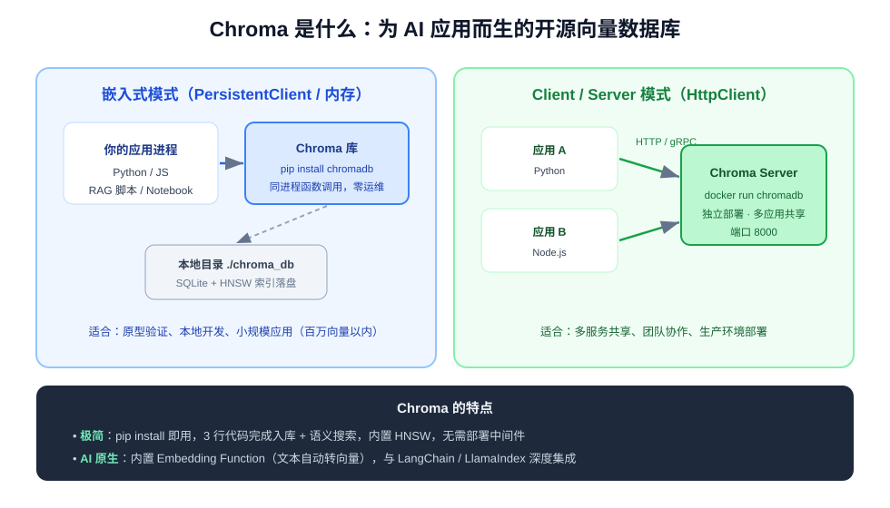
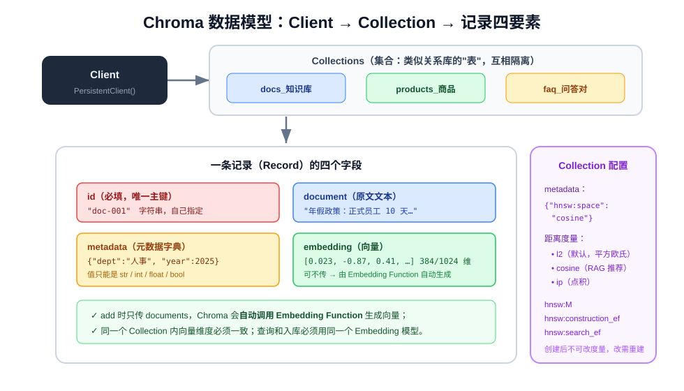
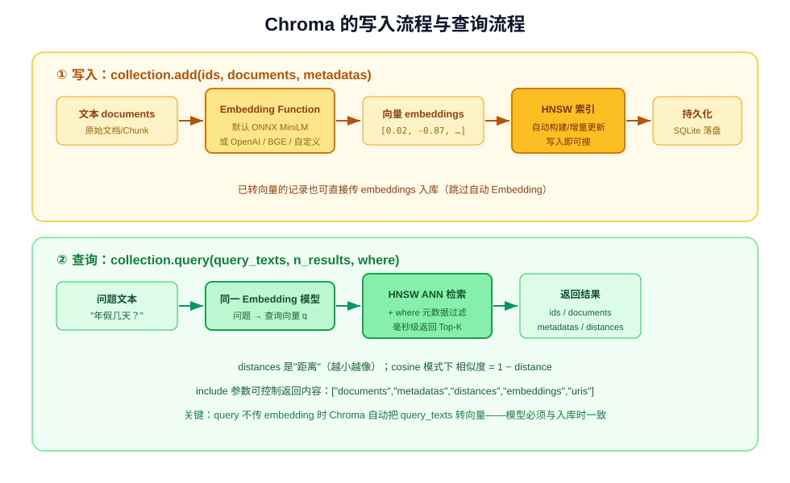
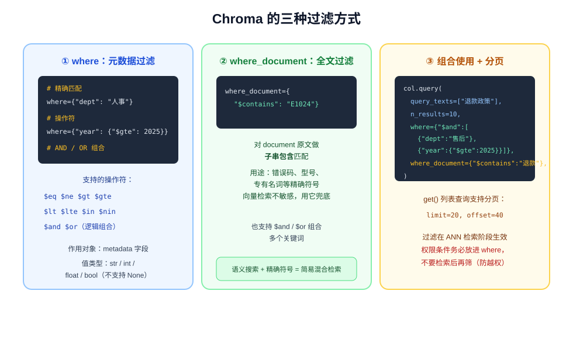
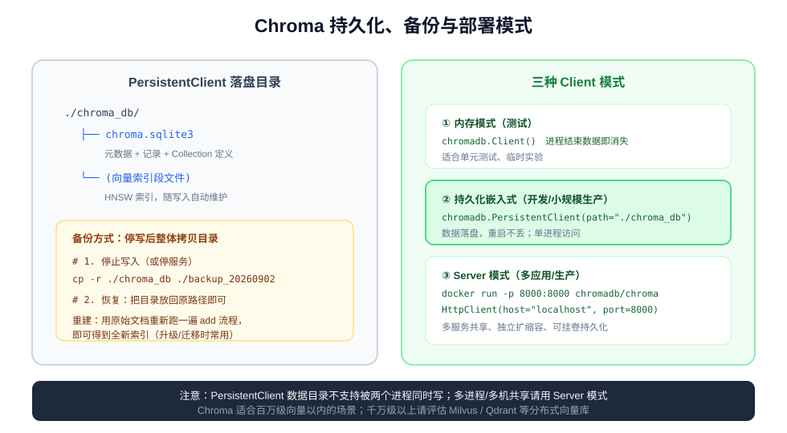

Chroma 入门手册：从零上手最轻量的向量数据库
Chroma 是一款开源的 AI 原生向量数据库，主打"pip install 即用、3 行代码完成语义搜索"。 它内置 Embedding（自动把文本转向量）、内置 HNSW 索引、数据自动落盘，是学习 RAG 和搭建小型语义搜索系统的最佳起点。 本篇从安装、核心概念、CRUD、查询过滤到 LangChain 实战与部署排错，带你从入门到实战。 （原理背景可参阅同目录《向量数据库》《什么是RAG》。）
一、Chroma 是什么
在向量数据库家族（Milvus、Qdrant、pgvector、Chroma……）中，Chroma 的定位非常明确：为开发者和 AI 应用 提供最低门槛的向量存储与检索。

核心特点：
- 极简：一条
pip install chromadb装好，无需部署任何中间件；以 Python/JS 库的形式直接嵌入应用进程； - AI 原生：内置 Embedding Function——你只需要传入文本，Chroma 自动完成"文本 → 向量"的转换与索引；
- 自带持久化：
PersistentClient一条指定目录，数据自动落盘为 SQLite + 索引文件，重启不丢； - 生态友好：LangChain / LlamaIndex 官方一等集成，RAG 教程中出现率最高的向量库；
- 可平滑演进：原型用嵌入式模式，上生产后可切换为 Docker 部署的 Server 模式（HttpClient），业务代码几乎不变。
适用规模：个人项目、原型验证、百万级向量以内的应用。千万级以上或需要分布式集群时，再评估 Milvus / Qdrant。
二、安装与环境准备
2.1 基本安装
pip install chromadb
建议 Python 3.10+。安装后验证：
python -c "import chromadb; print(chromadb.__version__)"
2.2 Windows 环境的常见坑（重要）
Chroma 的默认 Embedding 模型基于 ONNX Runtime，在 Windows 上首次导入/使用时可能报错：
ImportError: DLL load failed while importing onnxruntime.capi._pybind_state
按以下顺序排查解决：
- 安装 Visual C++ 运行库：安装 Microsoft Visual C++ Redistributable（2019/2022 版，64 位）；
- 显式安装 onnxruntime：
bash
pip install onnxruntime
- 确认 Python 环境：使用 64 位 Python 3.10~3.12；32 位 Python 无法加载 onnxruntime；
- 代码侧规避：业务代码中可以延迟导入 chromadb（在函数内部 import），并在创建 Collection 时 显式传入 Embedding Function（见第五节），避免任何路径意外触发默认 ONNX 组件初始化。
用最小脚本定位问题（先确认是"导入期"还是"调用期"失败，保留完整 traceback）：
# 最小复现脚本：分别验证 chromadb 导入、默认 Embedding、检索三件事
import chromadb
client = chromadb.Client()
col = client.get_or_create_collection("test")
col.add(ids=["1"], documents=["hello world"])
print(col.query(query_texts=["hello"], n_results=1))
💡 中文用户的额外建议：Chroma 默认模型
all-MiniLM-L6-v2是英文模型，中文语义检索效果较差。 中文项目建议直接换用 BGE 系列中文模型（见 5.2 节），可以同时绕开默认 ONNX 依赖问题。
三、5 分钟快速上手
import chromadb
# 1. 创建客户端：PersistentClient 数据落盘到本地目录
client = chromadb.PersistentClient(path="./chroma_db")
# 2. 创建（或获取）集合：类似关系数据库里的"表"
collection = client.get_or_create_collection(
name="faq",
metadata={"hnsw:space": "cosine"}, # RAG 场景推荐余弦距离
)
# 3. 写入数据：只传文本，向量由内置 Embedding 模型自动生成
collection.add(
ids=["1", "2", "3"],
documents=[
"年假政策：正式员工每年 10 天带薪年假，司龄满 5 年为 15 天。",
"报销流程：差旅费需在出差结束后 10 个工作日内提交发票。",
"考勤制度：标准工作时间为 9:00-18:00，午休 1 小时。",
],
metadatas=[
{"dept": "人事", "year": 2025},
{"dept": "财务", "year": 2025},
{"dept": "人事", "year": 2024},
],
)
# 4. 语义搜索：问"休假几天？"也能命中"年假"那条（不依赖字面匹配）
results = collection.query(
query_texts=["入职六年能休多久年假？"],
n_results=2,
)
print(results["documents"][0]) # 最相关的文档
print(results["distances"][0]) # 距离（越小越相似）
注意第 3 步：我们没有手动提供向量，Chroma 自动调用 Embedding Function 把文本转为向量、写入 HNSW 索引—— 这就是"AI 原生"的含义。
四、核心概念与数据模型

4.1 Client（客户端）
Client 是操作 Chroma 的入口，有三种形态（详见第八节）：
chromadb.Client() # 内存模式：进程结束数据消失，用于测试
chromadb.PersistentClient(path="./chroma_db") # 持久化嵌入式：开发/单机生产
chromadb.HttpClient(host="localhost", port=8000) # Server 模式：连接独立部署的 Chroma 服务
4.2 Collection（集合）
Collection 类似关系库中的表，一个 Client 下可以有多个 Collection（如 faq、products、docs），
彼此数据隔离。每个 Collection 在创建时绑定：
- 一个 Embedding Function（不指定则用默认 ONNX MiniLM）；
- 距离度量（通过 metadata 配置，创建后不可改，改需删表重建）：
collection = client.get_or_create_collection(
name="docs",
embedding_function=my_ef,
metadata={
"hnsw:space": "cosine", # l2（默认）/ cosine / ip
"hnsw:M": 32, # HNSW 图节点最大连边数
"hnsw:construction_ef": 200, # 建索引搜索宽度
"hnsw:search_ef": 128, # 查询搜索宽度，越大召回越高、越慢
},
)
4.3 记录（Record）的四个字段
| 字段 | 必填 | 说明 |
|---|---|---|
ids |
✅ | 唯一主键，字符串列表，如 ["doc-1", "doc-2"]，重复 id 会报错 |
documents |
二选一 | 原文文本，Chroma 自动调用 Embedding Function 转向量 |
embeddings |
二选一 | 手动提供向量（已用其他模型算好时），则跳过自动 Embedding |
metadatas |
可选 | 每个记录一个字典，值只支持 str / int / float / bool，用于过滤 |
关键约束：
- 同一 Collection 内所有向量维度必须一致（由 Embedding 模型决定，如 MiniLM 是 384 维、BGE-small 是 512 维）；
- 入库与查询必须使用同一个 Embedding 模型，否则向量不在同一空间，结果完全错乱。
五、Embedding Function：文本如何变成向量

5.1 默认 Embedding Function
不显式指定时，Chroma 使用 all-MiniLM-L6-v2（ONNX 本地推理，384 维，英文为主）。
优点是离线、免费、无 API Key；缺点是中文效果一般，且依赖 onnxruntime（见 2.2 节）。
5.2 常用 Embedding Function 配置
OpenAI（效果稳定，需 API Key）：
from chromadb.utils import embedding_functions
ef = embedding_functions.OpenAIEmbeddingFunction(
api_key="sk-xxx",
model_name="text-embedding-3-small", # 1536 维
# api_base="https://your-proxy/v1", # 走代理/兼容服务时配置
)
col = client.get_or_create_collection("docs", embedding_function=ef)
中文场景推荐：BGE 系列（本地推理、免费、中文效果优秀）：
pip install sentence-transformers
ef = embedding_functions.SentenceTransformerEmbeddingFunction(
model_name="BAAI/bge-small-zh-v1.5", # 512 维，中文轻量首选
# model_name="BAAI/bge-m3", # 多语言、长文本、混合检索，更重更强
)
5.3 自定义 Embedding Function
接入任何向量模型（本地模型、公司内部 API）只需实现 __call__，输入文本列表、返回向量列表：
from chromadb import Documents, EmbeddingFunction, Embeddings
class MyEmbeddingFunction(EmbeddingFunction):
def __call__(self, input: Documents) -> Embeddings:
# 示例：调用任意模型/服务，把 List[str] 转为 List[List[float]]
return [my_model.encode(text) for text in input]
ef = MyEmbeddingFunction()
col = client.get_or_create_collection("docs", embedding_function=ef)
注意：自定义类在 Server 模式下需要在服务端可导入；嵌入式模式直接使用即可。
六、数据的增删改查
6.1 写入 add / 更新 update / 插入或更新 upsert
# 新增（id 已存在会报错）
collection.add(ids=["1"], documents=["..."], metadatas=[{"dept": "人事"}])
# 更新：必须针对已存在的 id，可只更新部分字段
collection.update(ids=["1"], metadatas={"dept": "人力资源"})
collection.update(ids=["1"], documents=["更新后的原文……"]) # 文本变了会自动重算向量
# upsert：存在则更新、不存在则插入（同步数据时最常用）
collection.upsert(ids=["1", "4"], documents=["...", "..."], metadatas=[...])
documents或embeddings更新时，对应向量会自动重新计算，无需手动维护索引。
6.2 删除 delete
collection.delete(ids=["1", "2"]) # 按 id 删
collection.delete(where={"dept": "财务"}) # 按元数据条件删
collection.delete(where_document={"$contains": "草稿"}) # 按原文内容删
6.3 查询 get（按条件取原始数据，不做向量搜索）
# get 不做相似度搜索，按 id / 过滤条件取记录，支持分页
res = collection.get(
ids=["1", "2"],
where={"year": {"$gte": 2025}},
limit=20,
offset=0,
include=["documents", "metadatas"],
)
七、语义查询与过滤

7.1 基础语义查询
results = collection.query(
query_texts=["年假有多少天？"], # 自动转向量；也可直接传 query_embeddings
n_results=5,
include=["documents", "metadatas", "distances"],
)
# 返回结构：每个 key 对应一个"按查询分组"的列表
results["ids"][0] # ["3", "1", ...]
results["documents"][0] # 文本
results["metadatas"][0] # 元数据
results["distances"][0] # 距离：越小越相似；cosine 模式下 相似度 ≈ 1 − distance
7.2 where：元数据过滤
操作符：$eq $ne $gt $gte $lt $lte $in $nin，逻辑组合用 $and / $or：
collection.query(
query_texts=["退款政策"],
n_results=10,
where={"$and": [
{"dept": "售后"}, # $eq 可简写为键值对
{"year": {"$gte": 2025}},
{"status": {"$in": ["published", "effective"]}},
]},
)
7.3 where_document：全文子串过滤
向量检索对错误码、型号、专有名词等精确符号不敏感，可用 $contains 兜底（简易混合检索）：
collection.query(
query_texts=["这个错误怎么处理"],
n_results=5,
where_document={"$contains": "E1024"},
)
⚠️ 权限过滤必须写在
where里（如{"user_id": 当前用户}），在检索阶段就排除无权数据； 绝不能"先检索、再在代码里筛"，那会造成越权泄露。
八、Collection 管理、持久化与部署

8.1 Collection 管理
client.list_collections() # 列出所有集合
col = client.get_collection("docs") # 获取已有集合
client.delete_collection("temp") # 删除集合（连同数据，谨慎！）
col.modify(name="docs_v2", metadata={...}) # 重命名/修改配置
col.count() # 记录数
col.peek(10) # 预览前 10 条，调试用
8.2 持久化与备份
PersistentClient(path="./chroma_db")的数据落在目录中（chroma.sqlite3元数据 + 索引文件）， 写入即落盘，无需手动 persist；- 备份：停止写入后整体拷贝目录即可，恢复时放回原路径；
- 迁移/升级：用原始文档重新跑一遍
add流程重建索引，是最稳妥的方式（Embedding 模型变更后也必须重建）。
8.3 Server 模式部署（多应用共享 / 生产）
docker run -d --name chroma -p 8000:8000 \
-v $(pwd)/chroma_data:/chroma/chroma \
chromadb/chroma
应用侧把 Client 换成 HttpClient，业务代码完全不变：
client = chromadb.HttpClient(host="localhost", port=8000)
注意：持久化目录不支持两个进程同时写入；多进程/多机共享时必须走 Server 模式。
九、实战：用 Chroma + LangChain 搭建 RAG
Chroma 最常见的用途是作为 RAG 的向量存储层。安装集成包：
pip install langchain langchain-chroma langchain-openai pypdf
from langchain_community.document_loaders import DirectoryLoader, PyPDFLoader
from langchain_text_splitters import RecursiveCharacterTextSplitter
from langchain_openai import OpenAIEmbeddings, ChatOpenAI
from langchain_chroma import Chroma
from langchain.chains import create_retrieval_chain
from langchain.chains.combine_documents import create_stuff_documents_chain
from langchain_core.prompts import ChatPromptTemplate
# 1. 加载并切分文档
docs = DirectoryLoader("docs/", glob="**/*.pdf", loader_cls=PyPDFLoader).load()
chunks = RecursiveCharacterTextSplitter(chunk_size=500, chunk_overlap=80).split_documents(docs)
# 2. 写入 Chroma（persist_directory 自动持久化，无需调用 persist()）
vectorstore = Chroma.from_documents(
documents=chunks,
embedding=OpenAIEmbeddings(model="text-embedding-3-small"),
collection_name="company_docs",
persist_directory="./chroma_db",
collection_metadata={"hnsw:space": "cosine"},
)
# 3. 语义检索（带元数据过滤）
hits = vectorstore.similarity_search(
"年假有多少天？", k=5, filter={"dept": "人事"}
)
# 4. 组装 RAG 链
retriever = vectorstore.as_retriever(search_kwargs={"k": 5})
llm = ChatOpenAI(model="gpt-4o-mini", temperature=0)
prompt = ChatPromptTemplate.from_template(
"请只根据下面资料回答，没有依据就说'根据现有资料无法回答'：\n\n{context}\n\n问题：{input}"
)
rag_chain = create_retrieval_chain(
retriever, create_stuff_documents_chain(llm, prompt)
)
print(rag_chain.invoke({"input": "年假有多少天？"})["answer"])
LangChain 的 Chroma 底层就是 PersistentClient，filter= 参数对应原生 where，
因此第七节讲的过滤写法全部适用。
十、常见坑与排错清单
| 现象 | 原因 | 解决 |
|---|---|---|
Windows 导入报 DLL load failed: onnxruntime |
缺 VC++ 运行库 / 32 位 Python | 装 VC++ Redist、pip install onnxruntime、用 64 位 Python |
| 中文搜索"感觉不智能" | 默认 MiniLM 是英文模型 | 换 bge-small-zh-v1.5 等中文 Embedding Function |
| 改了距离度量/模型后结果混乱 | 度量与 Embedding 在建表后绑定，旧向量与新配置不匹配 | 删除 Collection，用新配置重新 add 全量数据 |
add 报维度不一致错误 |
同一 Collection 混用了不同模型的向量 | 一个 Collection 只用一个 Embedding 模型 |
| 入库后查不到新数据 | 误把内存 Client() 当持久化 |
用 PersistentClient(path=...) |
| 检索结果被权限外数据污染 | 权限过滤写在检索之后 | 权限条件放进 where，检索阶段过滤 |
id 冲突报错 |
重复 add 相同 id | 增量同步用 upsert 而非 add |
| 查询慢/召回低 | HNSW 默认参数保守 | 建表时调大 hnsw:search_ef（查询期）和 M |
| metadata 存 None / list 报错 | metadata 值只支持 str/int/float/bool | 复杂结构序列化为 JSON 字符串存储 |
| 多进程同时写目录损坏 | 持久化目录不支持多写者 | 改用 Server 模式（HttpClient） |
排错方法论（源自实战经验）：遇到问题先用最小脚本把失败定位在"导入期 / 初始化期 / 调用期"哪一层，
保留完整 traceback；根因是底层依赖问题时，优先做最小侵入的规避（显式指定 Embedding Function、延迟导入），
而不是大范围重写业务代码；严禁在初始化逻辑里做 delete_collection 之类的破坏性操作，删除应做成
显式管理函数由人工/上层调用。
十一、小结
| 知识点 | 一句话总结 |
|---|---|
| Chroma 定位 | 最轻量的 AI 原生向量数据库，嵌入式起步、Server 模式演进 |
| 三种 Client | Client 内存测试、PersistentClient 落盘单机、HttpClient 连 Docker 服务 |
| 数据模型 | Client → Collection（表）→ 记录四要素：ids / documents / embeddings / metadatas |
| 自动 Embedding | 只传 documents 即可自动转向量；中文项目换 BGE 模型 |
| 距离度量 | RAG 用 cosine，建表时指定、之后不可改；返回的 distance 越小越像 |
| 写操作 | add 新增、update 更新、upsert 存在即更新（同步首选）、delete 删除 |
| 查询 | query 语义搜索 + where 元数据过滤 + where_document 全文过滤 |
| 权限 | 权限条件必须进 where 在检索阶段生效，禁止先查后筛 |
| 备份 | 停写拷目录；换模型必须全量重建索引 |
| RAG 集成 | langchain-chroma 的 Chroma.from_documents 一步入库，filter 对应 where |
Chroma 把向量数据库的使用门槛降到了"和操作一个 Python 列表差不多"的程度，非常适合用来吃透 RAG 的 完整链路：切块 → Embedding → 入库 → 语义检索 → 拼 Prompt。等数据规模、并发或多服务共享的需求 超出单机边界时，你在 Chroma 上学到的数据模型、过滤、距离度量、Embedding 选型等概念，可以零成本迁移到 Milvus、Qdrant、pgvector 等生产级向量库。